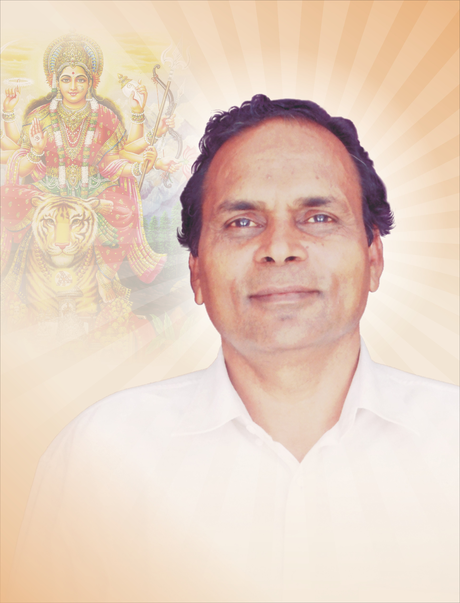
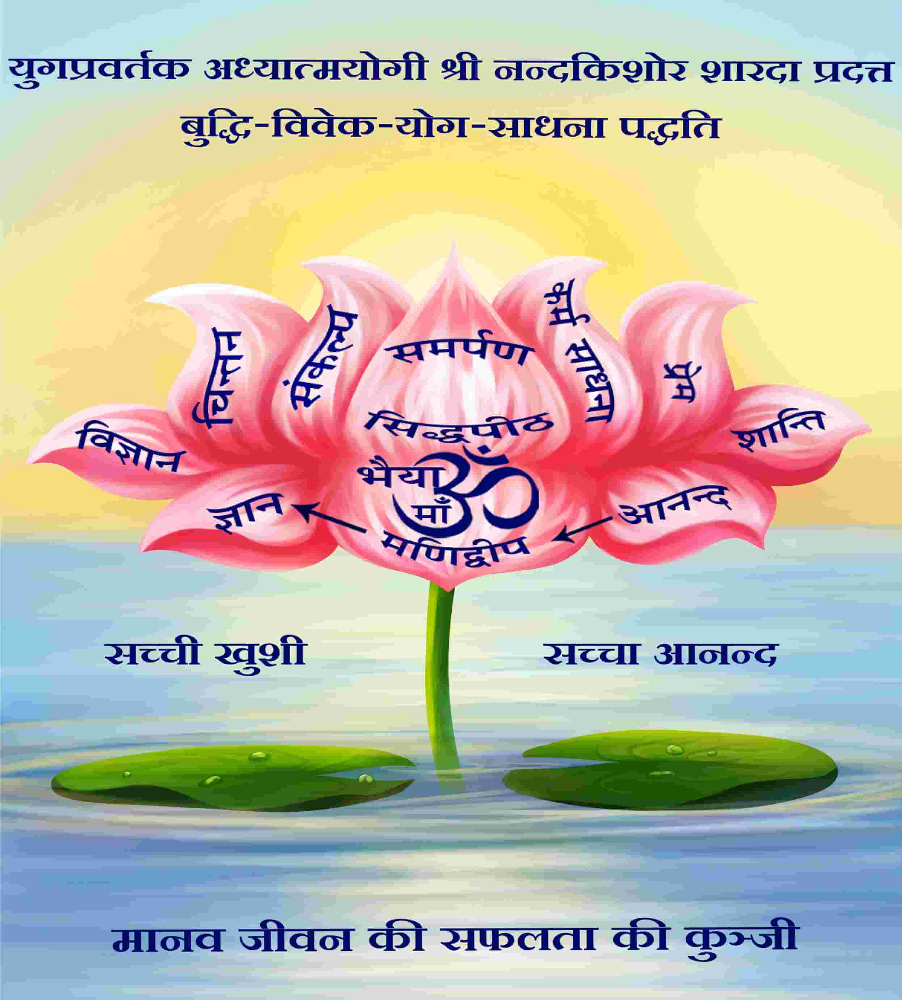

Knowledge
GyanUnderstanding eternal truth through reason, reflection and direct inner enquiry.
Know moreWorking towards Universal Brotherhood, World Peace and Human Welfare
Rooted in the timeless wisdom of Shri Nandkishore Sharda—Bhaiyaji—and sustained through the sacred vision of Kumari Madhubala Advani, this Mission bridges eternal spirituality with living service. Through Buddhi-Vivek Yog Sadhna, we inspire individuals to awaken higher consciousness, fulfil worldly duties with discernment, and advance toward joyful service, inner peace and self-realisation.

At the heart of Manidweep’s spiritual tradition is the belief that Jagadjanani Maa Tripura Sundari and Lord Shiva—reverently called Babuji—sent their beloved son, Yugpravartak Shri Nandkishore Sharda, to Earth with a special purpose: to offer humanity a simple spiritual path suited to the scientific spirit and responsibilities of the present age.
At fifteen, a profound encounter with mortality at his father’s pyre turned Nandkishore Sharda inward. In that moment, he resolved to discover the real purpose of life and the truth behind its origin.
With complete devotion, firm resolve, tireless effort and pure love, Bhaiyaji devoted himself to Jagadjanani Maa Tripura Sundari. He received Her Darshan, accepted Maa as his Guru and learnt this divine wisdom from the Divine Mother Herself. Through Her grace and blessings, years of disciplined Sadhna unfolded into a universal path of wisdom, discernment and inner steadiness that continues to guide seekers today.
Discover Bhaiyaji’s journeyThis path is open to every person, irrespective of age, background, caste or religion. It invites seekers to cultivate virtue, perform worldly duties without attachment and move from restlessness toward joy, peace and inner freedom—from humanity toward divinity.
Understanding eternal truth through reason, reflection and direct inner enquiry.
Know moreOffering the heart with humility, love and complete trust in the Divine.
Know moreFulfilling every duty as an offering, without attachment to personal reward.
Know moreTraining thought, conduct and consciousness through steady spiritual discipline.
Know morePreserved divine knowledge and a practical system for modern life.
Bhaiyaji transcribed the nectar-like divine knowledge granted by Jagadjanani Maa into this sacred book. Through it, hundreds of people have found proof of the Divine’s existence, understood eternal truth, and experienced profound joy, peace and happiness.
Know more
He gave this truth-based, eternal and science-grounded wisdom the form of a system rooted in awakened intellect and discernment—one that can be practised while remaining fully engaged with family, work and society.
Know moreWith Maa’s grace, Bhaiyaji guided sincere seekers and founded the Manidweep Adhyatm Parivar. Among those who received and embodied this spiritual direction initially were Kumari Basanti Manihar(Maa Basanti Ji) and Kumari Madhubala Advani(Madhu Maa).

Beginning her spiritual journey under Bhaiyaji's guidance in 1964, Maa Basanti devoted her life to translating his wisdom into compassionate service. Through profound Sadhna, steadfast devotion and motherly compassion, Maa Basanti carried Bhaiyaji’s teachings into the inner and everyday lives of seekers. She also gave institutional form to education, welfare and spiritual service.
Discover Maa Basanti’s journey →Madhu Maa's spiritual journey began in 1970, when Maa Basanti introduced the then 19-year-old Madhubala Advani to Bhaiyaji. That meeting marked a profound turning point, transforming a carefree young woman into a devoted spiritual seeker. Under the guidance of Maa Basanti and Shri Nandkishore Sharda, she undertook years of profound Sadhna and received the blessings of Jagatjanani Maa Tripurasundari.
When this spiritual commitment found expression in organised service three decades ago, she began working quietly at the grassroots. Alongside students, families, schools and volunteers, she listened closely, identified genuine need and ensured that assistance was offered with dignity and without discrimination.
Following Maa Basanti Ji's passing in 2021, she became President. Today, she guides the Mission with spiritual clarity and leads a qualified, selfless team carrying its educational, welfare and developmental initiatives forward.
Discover Madhu Maa’s journey →Bhaiyaji’s teachings are not an escape from worldly life. They help seekers meet its relationships, responsibilities and uncertainties with deeper awareness.
Intellect and discernment help examine thought before action, bringing steadiness to difficult decisions.
Devotion, non-attachment and self-discipline help balance personal, family and professional responsibilities.
Inner growth naturally widens into empathy, moral conduct and selfless responsibility toward others.
Within Nishkam Karma Sadhna, service is not separate from spirituality. It is spirituality expressed through responsibility. Under Jagadjanani Maa’s guidance, Bhaiyaji, Maa Basanti and Madhu Maa responded to interrupted education, hunger, dependence and diminished opportunity as living occasions for selfless action.
Thus a spiritual family gradually gave rise to institutions that protect dignity while cultivating Sanskar and sowing the seeds of spiritual awareness. The work remains open to people of every caste, religion and community.
The Swami Vivekanand Students’ Welfare Charitable Trust and Maa Shardamani Trust were created so financial hardship would not deny a deserving girl education.
Explore educational service →After Bhaiyaji attained Chaitanya Swaroop, Maa Basanti and Madhu Maa established Shri Nandkishore Sharda Gyan Ganga Mission to publish and freely share his wisdom.
Explore spiritual literature →Maa Basanti established Gyanyogi Shri Nandkishore Sharda Adhyatma Kendra to support needy boys from school through professional education.
Meet the four trusts →A pandemic response became sustained monthly ration assistance. Sewing support, women’s skills and free daily yoga further widened this circle of compassionate action.
Explore service in action →The figures measure assistance; their deeper meaning lies in confidence restored, education continued and families met with dignity.
Cumulative figures as of 31 March 2026. Student counts represent instances of support across reporting periods and should not be read as unique individuals.

“The Trust refused to let our circumstances define our ceiling.”
Supported through years of financial uncertainty, Poonam Mishra continued her education through M.Sc. Today she serves as a school principal—carrying confidence, responsibility and encouragement into the lives of another generation.
Poonam Mishra · Principal and former scholarship recipientToday, members of the Manidweep Adhyatm Parivar move forward with complete devotion toward Jagadjanani Maa Tripura Sundari and Lord Shiva’s beloved son, Yugpravartak Shri Nandkishore Sharda. As they advance upon the spiritual path, they also work selflessly for Universal Brotherhood, World Peace and Human Welfare—carrying his divine wisdom toward present and future generations.
Kindling one lamp from another, so the flame of spiritual light may continue to shine.